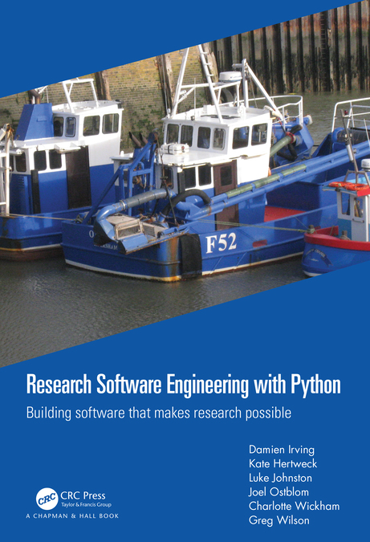

# Hammers and Saws <div align="center"> <h3> What We've Learned from Teaching Research Software Engineering <br/> with Python and R </h3> </div> <div class="flex-row"> <div class="flex-col narrow"> <p>  </p> </div> <div class="flex-col"> <br/> <table> <tr> <td><a href="https://damienirving.github.io/">Damien Irving</a></td> <td><a href="https://katehertweck.com/">Kate Hertweck</a></td> </tr> <tr> <td><a href="https://lukewjohnston.com/">Luke Johnston</a></td> <td><a href="https://joelostblom.com/">Joel Ostblom</a></td> </tr> <tr> <td><a href="https://www.cwick.co.nz/">Charlotte Wickham</a></td> <td><a href="https://third-bit.com">Greg Wilson</a></td> </tr> </table> <div align="center"> <p> <a href="https://www.routledge.com/Research-Software-Engineering-with-Python-Building-software-that-makes/Irving-Hertweck-Johnston-Ostblom-Wickham-Wilson/p/book/9780367698324">Chapman and Hall/CRC, 2021, 978-0367698324</a> </p> <p> <a href="https://merely-useful.tech/py-rse/">https://merely-useful.tech/py-rse/</a> </p> </div> </div> </div> --- # TL;DR - Wrote a book to bridge the gap between introductory programming and research software engineering - Based on over 50 years of collective teaching experience - Narrative follows logical progression of package development - Can be used to teach a semester-long course (complete with exercises) - Free to read online - Learned a few things along the way… --- # What We Care About <p class="hanging-indent"> <strong>Open science</strong>: making data, methods, and results freely available to all by publishing them under open licenses. </p> <p class="hanging-indent"> <strong>Reproducible research</strong>: ensuring that anyone with access to the data and software can feasibly reproduce results, both to check them and to build on them. </p> <p class="hanging-indent"> <strong>Sustainable software</strong>: the ease with which to maintain and extend it rather than to replace it; depends on skills and community culture as well as technology. </p> --- # Audience <div class="flex-row"> <div class="flex-col wide"> </div> <div class="flex-col"> <p> <strong>Amira</strong>: Master's in Library Science; some stats courses; learned some R doing data science courses online; wants to tidy up and share scripts, datasets, and reports. </p> </div> </div> <div class="flex-row"> <div class="flex-col"> <p> <strong>Jun</strong>: PhD in geology plus a 4-month data science bootcamp; now does forensic audits; uses a variety of machine learning and visualization tools; wants to open source his work. </p> </div> <div class="flex-col wide"> </div> </div> <div class="flex-row"> <div class="flex-col wide"> </div> <div class="flex-col"> <p> <strong>Sami</strong>: BSc in applied math and computer science; works for university's research computing center; supports everything from fluid dynamics to text analysis; wants to build and run data pipelines. </p> </div> </div> --- # Trajectory | Novice | Competent | RSE | | ---- | ---- | ---- | | Email attachments | Git repository | Branching workflow | | "Just do it" | Slack/mailing list | Martha's Rules | | Interactive analysis | A pile of scripts | Build tools / CI | | Word / Google Docs | LaTeX | Site generator | | "It doesn't crash" | "Are there any NAs?" | Assertions / unit tests | | "Um, hi?" | README | LICENSE + CoC | --- # Title - Main topics covered: FIXME: insert summary here --- # What did we learn about differences in Python and R? - Why did we write the python book first? Happenstance! We started out working on them in tandem. We decided we needed to focus on one to complete. The Python book was further along, so we went there. - Python book focuses on more general and transferable themes (CI, etc); R applies packages that obscure processes occurring in the background (probably good we finished Python first) - Tools taught: Unix in python, but not in R. Interface for Git. Make for automation. - Things that are "easy" in one language are not necessarily "easy" in the other --- # What did we learn about writing books? - It takes longer than you expect - Working with small to medium-sized team: modeling collaborative approaches covered in the books, content is not one person's opinion and preferences, but aggregates/averages/smooths over idiosyncrasies of individuals to make a more generalizable story - Tools for writing the books: all are difficult, for different reasons